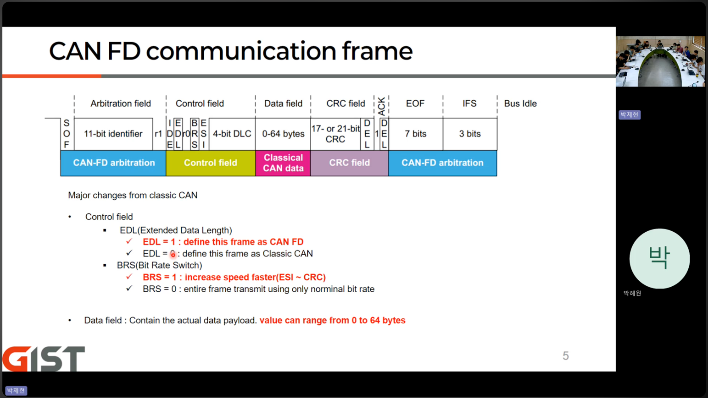
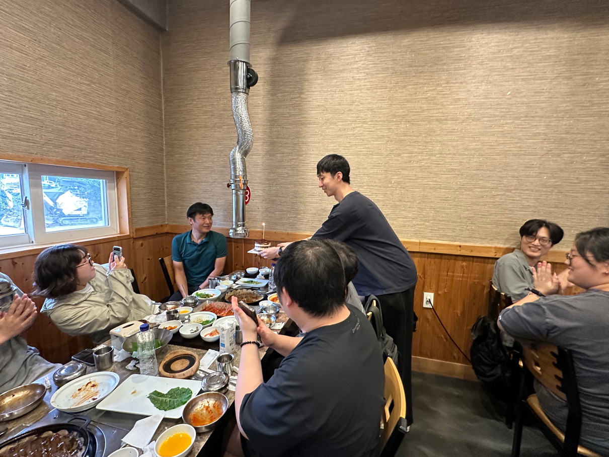
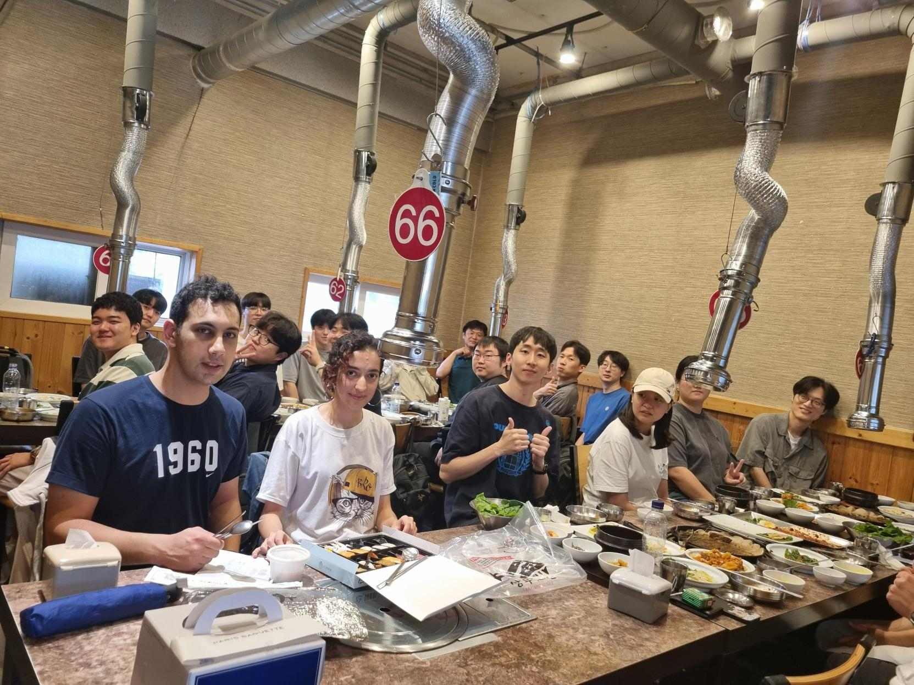
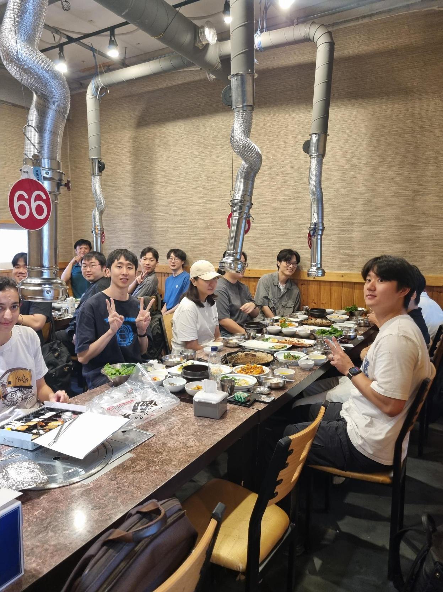

작성자: 허필원
2025년 가을학기가 시작되었습니다! 9월 12일, HUR 연구실에서는 개강 첫 Journal Club(JC)과 함께 새로운 연구원들을 맞이하는 환영회, 그리고 예상치 못한 깜짝 생일 파티까지 열리며 따뜻하고 활기찬 하루를 보냈습니다.

이번 학기 첫 JC에서는 석사과정 박제현 학생이 연구 과제에서 모터 제어에 사용할 CAN-FD(Controller Area Network with Flexible Data-rate) 통신 프로토콜에 대해 발표했습니다. CAN-FD는 기존 CAN 프로토콜보다 더 빠른 데이터 전송 속도와 더 큰 페이로드를 제공하여, 정밀한 모터 제어가 필요한 웨어러블 로봇 연구에 핵심적인 기술입니다. 신입생들도 함께 참여하며 활발한 질의응답이 오갔습니다.
이번 학기에는 네 명의 새로운 연구원이 HUR 연구실에 합류했습니다. 각자 독특한 배경과 열정을 가진 이들을 소개합니다:
김래헌 (석사과정): GIST 학부 시절부터 우리 연구실에서 인턴으로 활동해온 김래헌 학생은 이제 정식으로 석사과정에 입학했습니다. 앞으로 Hip Exoskeleton 제어 연구를 수행할 예정입니다.
박수영 (석박사 통합과정): 국민대 학부 출신으로, 휴머노이드 로봇 동아리에서 다양한 로봇 제어 경험을 쌓았습니다. 2024년 12월부터 인턴으로 함께해온 박수영 학생은 웨어러블 로봇의 상태 추정 연구를 담당합니다.
Hesamoddin Haddadadel (석사과정): 이란 최고의 명문 University of Tehran 기계공학과 출신입니다. 졸업 후 IT 기업에서의 실무 경험을 바탕으로 LLM(대규모 언어 모델)과 VLA(Vision-Language-Action) 연구를 진행할 예정입니다.
Mahta Akhyani (석사과정): 역시 University of Tehran 화학공학과 출신으로, Social Robot 연구 경험이 풍부합니다. 우리 연구실에서는 웨어러블 로봇과 사용자 간의 신뢰(Trust) 관련 연구를 수행합니다.
다양한 배경을 가진 새로운 멤버들과 함께 더욱 역동적인 연구 환경이 만들어질 것으로 기대됩니다!
사실 이 날은 허필원 교수님(본인)의 생일이기도 했습니다! 의도한 것은 아니었지만, 학생들이 준비한 깜짝 생일 축하 이벤트로 JC가 더욱 특별한 시간이 되었습니다.

JC가 끝난 후, 연구실 전원이 함께 학교 정문 바로 옆에 위치한 꽃담으로 이동해 맛있는 점심 식사를 즐겼습니다. 신입생들과 기존 연구원들이 자연스럽게 어울리며 이야기를 나누는 따뜻한 시간이었습니다.


점심 후에는 바로 옆 스타벅스로 자리를 옮겨 커피와 차를 마시며 여유로운 오후를 보냈습니다. 새 학기 계획과 각자의 연구 방향에 대해 이야기하며 팀워크를 다지는 소중한 시간이 되었습니다.
새로운 학기의 시작을 알리는 이번 행사를 통해 HUR Group은 더욱 단단한 팀으로 거듭났습니다. 다양한 국적과 배경을 가진 연구원들이 모여 웨어러블 로봇, 휴머노이드, 그리고 인간-로봇 상호작용 분야에서 혁신적인 연구를 이어갈 것입니다. 앞으로의 HUR Group 소식을 많이 기대해 주세요!